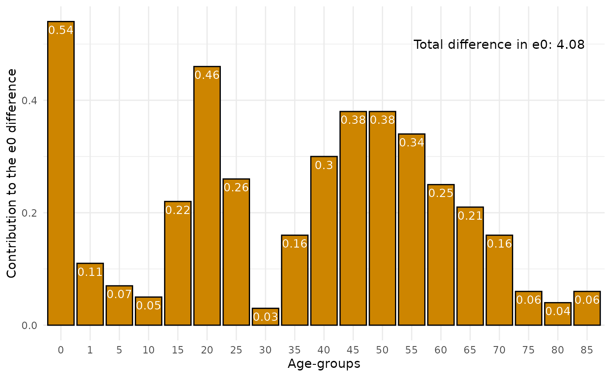
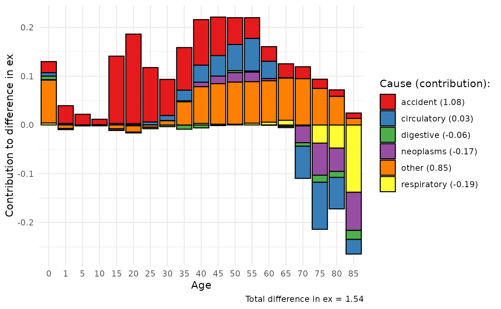
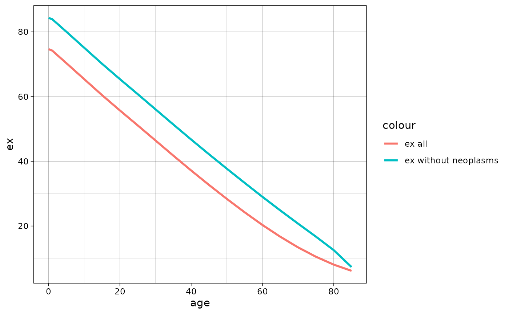
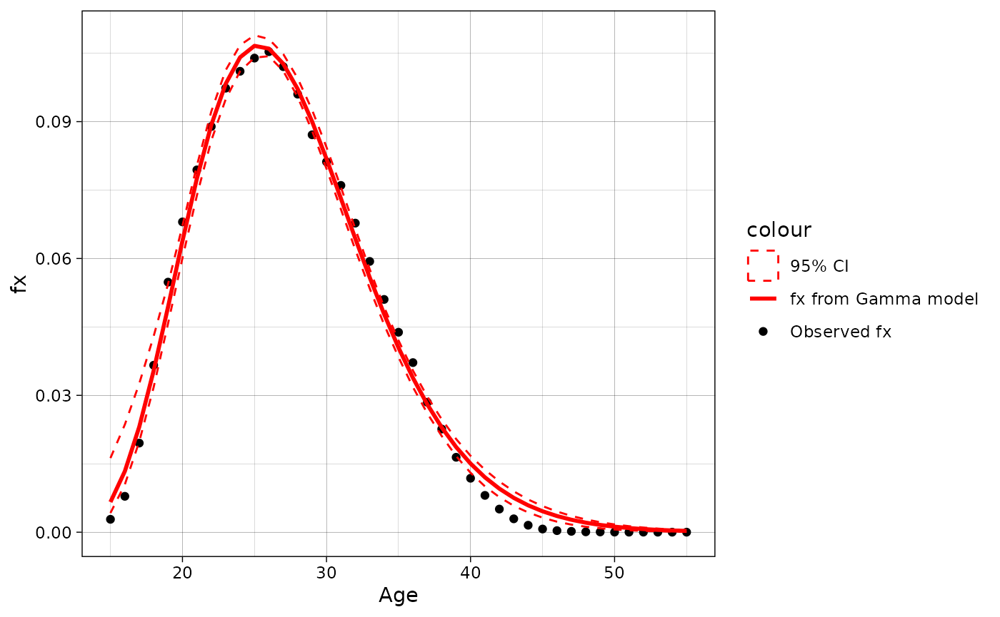
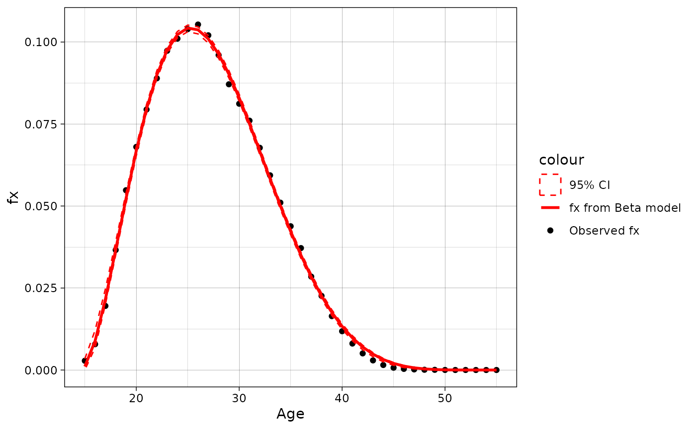
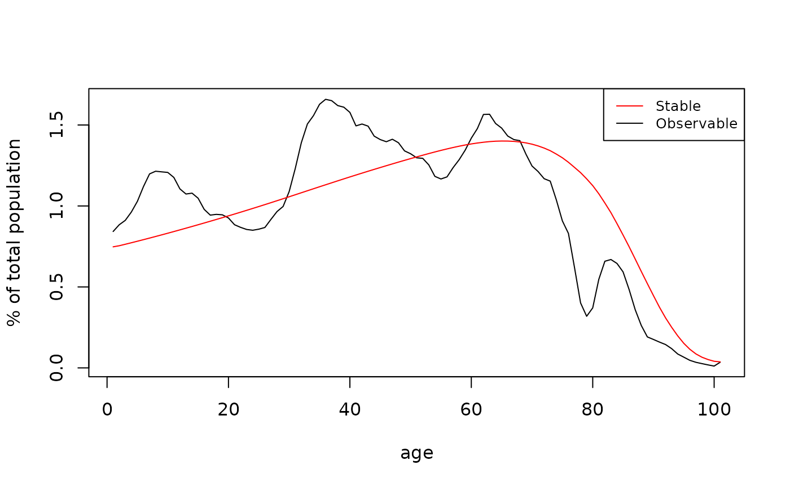
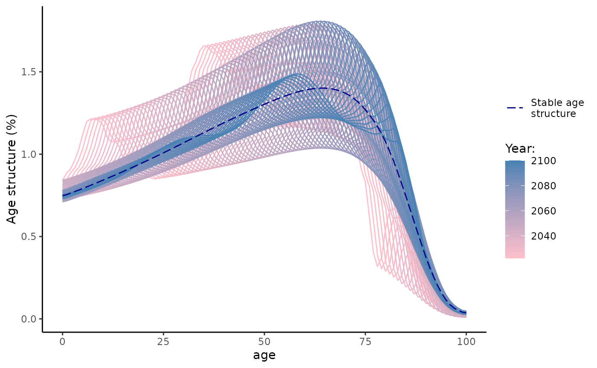
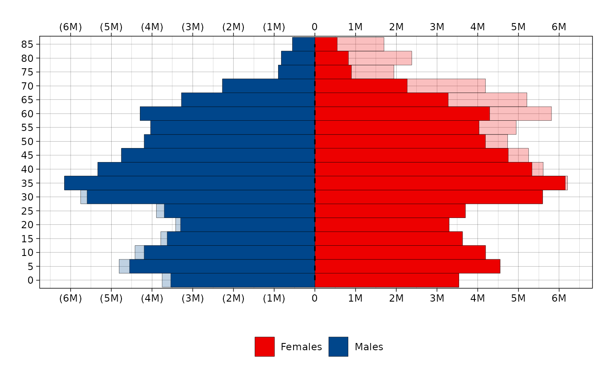

Get started with `demor`
demor.RmdInstallation
You can install the development version of demor from GitHub with:
# install.packages("devtools")
devtools::install_github("vadvu/demor")Get Rosbris data
The data from “The
Russian Fertility and Mortality database” (2024) is presented in the
demor as datasets in the long-format (mortality/fertility
by 1/5-year age groups from 1989 to 2022).
The example of usage is placed below, where data on mortality by 5-year age groups is presented:
dbm <- demor::rosbris_mortality_pop_5
# for 1-year age interval
# dbm <- demor::rosbris_mortality_pop_1Lets see the data for Russia in 2010 for males and for total population (both urban and rural)
dbm[dbm$year==2010 & dbm$code==1100 & dbm$sex=="m" & dbm$territory=="t",]
#> year code territory sex age mx N Dx
#> 20445 2010 1100 t m 0 0.008823 869388 7670.61
#> 20446 2010 1100 t m 1 0.000604 3222450 1946.36
#> 20447 2010 1100 t m 5 0.000355 3613276 1282.71
#> 20448 2010 1100 t m 10 0.000387 3398894 1315.37
#> 20449 2010 1100 t m 15 0.001186 4353344 5163.07
#> 20450 2010 1100 t m 20 0.002546 6193325 15768.21
#> 20451 2010 1100 t m 25 0.004491 6002262 26956.16
#> 20452 2010 1100 t m 30 0.006808 5395865 36735.05
#> 20453 2010 1100 t m 35 0.007934 4973298 39458.15
#> 20454 2010 1100 t m 40 0.009782 4464789 43674.57
#> 20455 2010 1100 t m 45 0.013354 5140274 68643.22
#> 20456 2010 1100 t m 50 0.018567 5207919 96695.43
#> 20457 2010 1100 t m 55 0.026250 4333619 113757.50
#> 20458 2010 1100 t m 60 0.037143 3117320 115786.62
#> 20459 2010 1100 t m 65 0.049925 1573662 78565.08
#> 20460 2010 1100 t m 70 0.068599 2149929 147482.98
#> 20461 2010 1100 t m 75 0.097635 1077916 105242.33
#> 20462 2010 1100 t m 80 0.138043 714191 98589.07
#> 20463 2010 1100 t m 85 0.198593 231350 45944.49
#> name
#> 20445 Российская Федерация
#> 20446 Российская Федерация
#> 20447 Российская Федерация
#> 20448 Российская Федерация
#> 20449 Российская Федерация
#> 20450 Российская Федерация
#> 20451 Российская Федерация
#> 20452 Российская Федерация
#> 20453 Российская Федерация
#> 20454 Российская Федерация
#> 20455 Российская Федерация
#> 20456 Российская Федерация
#> 20457 Российская Федерация
#> 20458 Российская Федерация
#> 20459 Российская Федерация
#> 20460 Российская Федерация
#> 20461 Российская Федерация
#> 20462 Российская Федерация
#> 20463 Российская ФедерацияMortality
Life table
Now one can create life table based on gotten data for
2010-Russia using LT().
Note,
for age 0 is modeled as in Evgeny M. Andreev and
Kingkade (2015), while the function
can use user-specific
from the argument ax. However, despite there is a plethora
of methods to construct life table that “are based upon very different
assumptions, when applied to actual mortality rates they do not result
in significant differences of importance to mortality analysis.” (WHO, 1977, p. 70, cite from Preston, Heuveline, and Guillot 2001,
47). For example, changing
to 0.5 only increases the life expectancy
by
for the 2010 Russian male population, which is about 4 days when applied
to human life span.
rus2010 <- dbm[dbm$year==2010 & dbm$code==1100 & dbm$sex=="m" & dbm$territory=="t",]
LT(
age = rus2010$age,
sex = "m",
mx = rus2010$mx #age specific mortality rates (mx)
)
#> age mx ax qx lx dx Lx Tx ex
#> [1,] 0 0.00882 0.132 0.00876 1.00000 0.00876 0.99885 63.04122 63.04
#> [2,] 1 0.00060 2.000 0.00241 0.99124 0.00239 3.96019 62.04238 62.59
#> [3,] 5 0.00036 2.500 0.00177 0.98885 0.00175 4.93988 58.08218 58.74
#> [4,] 10 0.00039 2.500 0.00193 0.98710 0.00191 4.93072 53.14231 53.84
#> [5,] 15 0.00119 2.500 0.00591 0.98519 0.00582 4.91139 48.21159 48.94
#> [6,] 20 0.00255 2.500 0.01265 0.97937 0.01239 4.86586 43.30020 44.21
#> [7,] 25 0.00449 2.500 0.02221 0.96698 0.02147 4.78120 38.43434 39.75
#> [8,] 30 0.00681 2.500 0.03347 0.94550 0.03165 4.64841 33.65314 35.59
#> [9,] 35 0.00793 2.500 0.03890 0.91386 0.03555 4.48042 29.00473 31.74
#> [10,] 40 0.00978 2.500 0.04774 0.87831 0.04193 4.28672 24.52431 27.92
#> [11,] 45 0.01335 2.500 0.06461 0.83638 0.05404 4.04679 20.23759 24.20
#> [12,] 50 0.01857 2.500 0.08872 0.78234 0.06941 3.73817 16.19080 20.70
#> [13,] 55 0.02625 2.500 0.12317 0.71293 0.08781 3.34513 12.45263 17.47
#> [14,] 60 0.03714 2.500 0.16994 0.62512 0.10623 2.86003 9.10751 14.57
#> [15,] 65 0.04992 2.500 0.22193 0.51889 0.11516 2.30657 6.24748 12.04
#> [16,] 70 0.06860 2.500 0.29278 0.40374 0.11821 1.72316 3.94091 9.76
#> [17,] 75 0.09764 2.500 0.39240 0.28553 0.11204 1.14754 2.21775 7.77
#> [18,] 80 0.13804 2.500 0.51313 0.17349 0.08902 0.64489 1.07021 6.17
#> [19,] 85 0.19859 5.035 1.00000 0.08447 0.08447 0.42532 0.42532 5.04Note, from life table one can compute other functions (not just ) and quantities of interest:
- Crude death rate or death rate above some age
- Probability of surviving from age to age :
- Probability that a newborn will die between ages and :
- Probability that a newborn will die between ages and :
- Probability that a newborn will survive to age :
- Probability that a newborn will die in age :
- Life course ratio from age to that is the fraction of person-years lived from age onward:
- Crude estimate of the number of births needed to “replace” expected deaths: where is total population
See also Preston, Heuveline, and Guillot (2001).
The life table is the one of the most important demographic tools that can be used not only for mortality, but for any other decrement processes (for ex., marital, occupation, migration status and etc).
Human Life Indicator (HLI)
A good alternative to the human development indicator (HDI) is the human life indicator (HLI) proposed by Ghislandi, Sanderson, and Scherbov (2019). It requires just (and it is based on life table). It is calculated as geometric mean of lifespans: where is age and , are functions from life table that corresponds to age .
Calculation in the demor is as follows (one need only
):
hli(
age = rus2010$age,
mx = rus2010$mx,
sex = "m"
)
#> [1] 57.18468Gini coefficient
As Shkolnikov, Andreev, and Begun (2003) note, “at present, the average level of life expectancy is high in many countries and it is interesting to study to what extent this advantage is equally accessible to all people”. (p. 306). One of the tools for analysing mortality inequality within the population (or, rather, the life table) is the Gini index, which is similar to the “usual” index widely used in economics. Life table Gini, , shows a degree of inter-individual variability in age at death and can be interpreted as in other fields (; higher , higher inequality and vice versa). Also one can be interested in “absolute” Gini coefficient (aka AID - Absolute Inter-individual Difference) that is which “is equal to the average inter-individual difference in length of life and is measured in years.” (Shkolnikov, Andreev, and Begun 2003, 312)
Below is the function gini that computes Gini index as
well as produces data for Lorenz curve - the graphical representation of
inequality. The formulas for the calculations are derived from Shkolnikov, Andreev, and Begun (2003) (that is based on the Hanada (1983)
formulation).
dbm.1 <- demor::rosbris_mortality_pop_1
mx <- dbm.1[dbm.1$code==1100 & dbm.1$territory=="t" & dbm.1$sex=="f" & dbm.1$year == 1995,]$mx
res = gini(age = 0:100, mx = mx, sex = "f")
res$Gini
#> $G0
#> ex
#> 0.1295455
#>
#> $G0_abs
#> ex
#> 9.27805Note, in Shkolnikov, Andreev, and Begun (2003) the
(see p. 310, figure 1), while using gini one obtains
0.1295. Also note that the larger the age interval, the less accurate
the estimate will be, since it is based on a discrete approximation of a
continuous function.
Below is an example of Lorenz curve that can be created using ggplot2
and gini output.
res$plot %>%
ggplot(aes(Fx, Phix))+
geom_line(color = "red")+
geom_abline(intercept = 0, slope = 1)+
scale_x_continuous(limits=c(0,1), expand = c(0, 0)) +
scale_y_continuous(limits=c(0,1),expand = c(0, 0)) +
theme_classic()+
labs(x = "Proportion in population", y = "Proportion in person-years of life")+
ggtitle("Lorenz curve: Russia, 1995, females",
subtitle = paste0("G0 = ", round(res$Gini$G0, 2), ", ",
"G0 abs = ", round(res$Gini$G0_abs, 2), ", ",
"e0 = ", round(res$Gini$G0_abs/res$Gini$G0, 2))
)
Note, one can calculate not only Gini inequality index, but also Drewnowski’s index of equality that is proposed by Aburto et al. (2022) (so, for Russian 1995 females it is ) that also can serve as an indicator of the shape of mortality patterns.
e-dagger
Another measure of mortality inequality is “e-dagger”, , proposed by Vaupel and Romo (2003), that is approximation of “the average life expectancy lost because of death” (Vaupel and Romo 2003, 206).
In demor there is a function edagger for
calculation “e-dagger” for age
,
:
mx <- dbm.1[dbm.1$code==1100 & dbm.1$territory=="t" & dbm.1$sex=="f" & dbm.1$year == 1995,]$mx
res = edagger(age = 0:100, mx = mx, sex = "f")
res[c(1, 26, 51, 76)]
#> 0 25 50 75
#> 12.719536 10.968361 9.137110 5.201578Hence, for Russian female population in 1995 is 12.72. From one can also calculate life table entropy (see, for ex., Wrycza, Missov, and Baudisch 2015) that is simply . Usually only one quantity as entropy is presented that is , which sometimes is denoted as , and it is .
Note that the larger the age interval, the less accurate the estimate will be, since it is based on a discrete approximation of a continuous function.
For more inequality indicators and their comparisons, see Shkolnikov, Andreev, and Begun (2003), Wrycza, Missov, and Baudisch (2015) and Wilmoth and Horiuchi (1999) as well as LifeIneq
package.
Years of Life Lost (YLL)
One of the most popular (and relatively young) measure of lifespan inequality is “years of life lost” (YLL) proposed in Martinez et al. (2019). As authors claim, “YLL is a valuable measure for public health surveillance, particularly for quantifying the level and trends of premature mortality, identification of leading causes of premature deaths and monitoring the progress of YLL as a key indicator of population health” (Martinez et al. 2019, 1368).
Authors proposed different metrics of YLL:
- Absolute number of YLL: that is calculated for age x, time t and cause of death c. YLL for the whole population is just sum of . SLE is the standard life expectancy that is invariant over time, sex and population (it’s meaning is straightforward: it is the potential maximum life span of an individual, who is not exposed to avoidable health risks or severe injuries and receives appropriate health services), and is a number of deaths at age x. Of course, one can calculate YLL not for specific cause c, but for overall mortality that is called all-causes YLL.
- YLL as proportion: that is just cause specific YLL divided by all-causes YLL.
- YLL rate: where is population.
- Age-standardized YLL rate: where is the standard population weight at age x, where is the oldest, closing age (for ex., 85+ or 100+). In other words, it’s just direct standardization of .
Let’s calculate all-cause YLL, Yll rate and ASYR using Rosbris data that we have downloaded.
#YLL
yll(rus2010$Dx, type = "yll")
#> $yll_all
#> [1] 33640561
#>
#> $yll
#> [1] 705159.2 174024.0 108414.6 104611.4 384855.2 1096994.4 1741367.9
#> [8] 2190511.0 2157177.1 2171936.4 3075902.7 3860081.6 3989475.5 3502545.3
#> [15] 2002623.9 3063221.5 1729131.5 1233349.3 349178.1
#YLL rate
yll(rus2010$Dx, type = "yll.r", pop = rus2010$N)
#> $yll.r_all
#> [1] 50945.02
#>
#> $yll.r
#> [1] 81109.836 5400.365 3000.453 3077.806 8840.451 17712.527
#> [7] 29011.861 40596.105 43375.182 48645.890 59839.275 74119.462
#> [13] 92058.751 112357.578 127258.833 142480.124 160414.307 172691.796
#> [19] 150930.678For ASYR one needs standard population. Let’s use 2010 population as standard (note, in this case ASYR equals YLL rate because we use 2010 mortality).
#ASYR
yll(rus2010$Dx, type = "asyr", pop = rus2010$N, w = rus2010$N/sum(rus2010$N))
#> $asyr_all
#> [1] 50945.02
#>
#> $asyr
#> [1] 1067.8879 263.5407 164.1824 158.4227 582.8220 1661.2803 2637.1149
#> [8] 3317.2939 3266.8132 3289.1646 4658.1245 5845.6793 6041.6326 5304.2289
#> [15] 3032.7590 4638.9202 2618.5841 1867.7751 528.7928Also one can calculate different YLL measures using
standards that are provided by demor as dataframe.
demor::sle_standAge decomposition of differences in life expectancies
Also one can do simple decomposition between 2 populations. Lets use Russia-2000 as base population and Russia-2010 as compared population. This function implements three almost identical discrete methods that were proposed almost simultaneously: in Андреев (1982), in Arriaga (1984) and in Pollard (1982).
rus2010 <- dbm[dbm$year==2010 & dbm$code==1100 & dbm$sex=="m" & dbm$territory=="t",]
rus2000 <- dbm[dbm$year==2000 & dbm$code==1100 & dbm$sex=="m" & dbm$territory=="t",]
dec <- decomp(mx1 = rus2000$mx,
mx2 = rus2010$mx,
age = rus2000$age,
method = "andreev")
head(dec)
#> age ex1 ex2 lx2 dex ex12 ex12_prc
#> 1 0 58.99 63.04 1.00000 4.05 0.54 13.235294
#> 2 1 59.04 62.59 0.99124 3.55 0.11 2.696078
#> 3 5 55.29 58.74 0.98885 3.45 0.07 1.715686
#> 4 10 50.45 53.84 0.98710 3.39 0.05 1.225490
#> 5 15 45.59 48.94 0.98519 3.35 0.22 5.392157
#> 6 20 41.05 44.21 0.97937 3.16 0.46 11.274510Than let us plot the result of decomp using
ggplot2:
ggplot(dec, aes( as.factor(age), ex12))+
geom_bar(stat = "identity", color = "black", fill = "orange3")+
theme_minimal()+
labs(x = "Age-groups",
y = "Сontribution to the e0 difference")+
annotate("text", x = "70", y = 0.5, label = paste0("Total difference in e0: ", sum(dec$ex12)))+
geom_text(aes(label = ex12), vjust = 1.5, color = "white", size = 3.5)
Age and cause decomposition of differences in life expectancies
Also one can do decomposition between 2 populations by age and causes. Lets use example from E. M. Andreev and Shkolnikov (2012) where data for US and England and Wales men mortality by some causes are presented.
Lets see the data
data("mdecompex")
head(mdecompex)
#> # A tibble: 6 × 9
#> age neoplasms circulatory respiratory digestive accident other all
#> <dbl> <dbl> <dbl> <dbl> <dbl> <dbl> <dbl> <dbl>
#> 1 0 0.0000349 0.000173 0.000188 0.000151 0.000377 0.00669 7.62e-3
#> 2 1 0.0000309 0.0000155 0.0000220 0.00000930 0.000163 0.000112 3.53e-4
#> 3 5 0.0000313 0.00000560 0.00000687 0.00000324 0.0000792 0.0000409 1.67e-4
#> 4 10 0.0000305 0.0000127 0.00000896 0.00000286 0.000127 0.0000490 2.31e-4
#> 5 15 0.0000424 0.0000322 0.0000141 0.00000401 0.000765 0.0000821 9.40e-4
#> 6 20 0.0000600 0.0000511 0.0000158 0.00000928 0.00114 0.000130 1.41e-3
#> # ℹ 1 more variable: cnt <chr>For mdecomp 2 lists with arrays for 2 population are
required.
#US men
mx1 <- mdecompex %>%
filter(cnt == "usa") %>%
select(-cnt, -age) %>% select(all, everything()) %>%
as.list()
#England and Wales men
mx2 <- mdecompex %>%
filter(cnt == "eng") %>%
select(-cnt, -age) %>% select(all, everything()) %>%
as.list()
decm <- mdecomp(mx1 = mx1,
mx2 = mx2,
sex = "m",
age = unique(mdecompex$age),
method = "andreev"
)
head(decm)
#> age ex12 neoplasms circulatory respiratory digestive accident
#> 1 0 0.13 0.0009474709 7.090137e-03 0.0042212672 7.167768e-03 0.02282901
#> 2 1 0.03 -0.0025030458 5.483996e-04 0.0020247182 6.245908e-04 0.03637029
#> 3 5 0.02 -0.0016468368 8.262058e-05 -0.0001300012 9.929857e-05 0.02178479
#> 4 10 0.01 -0.0014084238 4.993427e-04 -0.0002451017 8.338450e-05 0.01117647
#> 5 15 0.13 -0.0032690840 2.657675e-03 0.0005053688 -2.052103e-04 0.13796276
#> 6 20 0.17 -0.0009648903 2.773336e-03 -0.0016773417 -8.983808e-04 0.18353643
#> other
#> 1 0.0877443429
#> 2 -0.0070649563
#> 3 -0.0001898743
#> 4 -0.0001056675
#> 5 -0.0076515085
#> 6 -0.0127691565Than let us plot the result of mdecomp using ggplot2. This requires
some data transformations
decm_plot <- decm[,c(1,3)]
decm_plot$group = colnames(decm)[3]
colnames(decm_plot)[2]<-"ex12"
for(i in 4:ncol(decm)){
decm_plot_i <- decm[,c(1,i)]
decm_plot_i$group = colnames(decm)[i]
colnames(decm_plot_i)[2]<-"ex12"
decm_plot <- rbind(decm_plot,decm_plot_i)
rm(decm_plot_i)
}
for (i in unique(decm_plot$group)){
decm_plot[decm_plot$group==i,]$group <- paste0(i, " (", round(sum(decm_plot[decm_plot$group==i,]$ex12),2), ")")
}
ggplot(data = decm_plot, aes(x = as.factor(age), y = ex12, fill = group))+
geom_bar(stat="identity", colour = "black")+
theme_minimal()+
scale_fill_brewer(palette="Set1")+
labs(x = "Age", y = "Contribution to difference in ex", fill = "Cause (contribution):",
caption = paste0("Total difference in ex = ", sum(decm[,2]))
)
Multiple Decrement Life Table
Also one can construct the Multiple Decrement Life Table that expands the usual life table adding additional columns () for specific decrement causes. Note, and user should specify (the first array in the list). Let us use the shorten vesrion of data from the previous example, using only overall and from neoplasm.
mx <- mx1[c("all", "neoplasms")]
age = unique(mdecompex$age)
mlt.res = MLT(age, mx)
head(mlt.res)
#> age mx ax qx lx dx Lx Tx ex
#> [1,] 0 0.00762 0.134 0.00757 1.00000 0.00757 0.99899 74.65476 74.65
#> [2,] 1 0.00035 2.000 0.00141 0.99243 0.00140 3.96693 73.65578 74.22
#> [3,] 5 0.00017 2.500 0.00084 0.99103 0.00083 4.95310 69.68885 70.32
#> [4,] 10 0.00023 2.500 0.00115 0.99021 0.00114 4.94818 64.73574 65.38
#> [5,] 15 0.00094 2.500 0.00469 0.98907 0.00464 4.93373 59.78756 60.45
#> [6,] 20 0.00141 2.500 0.00702 0.98443 0.00691 4.90486 54.85384 55.72
#> qx_neoplasms dx_neoplasms lx_neoplasms ex_no_neoplasms
#> [1,] 0.00003 0.00003 0.24395 84.29
#> [2,] 0.00012 0.00012 0.24392 83.93
#> [3,] 0.00015 0.00015 0.24380 80.03
#> [4,] 0.00015 0.00015 0.24365 75.08
#> [5,] 0.00021 0.00021 0.24350 70.14
#> [6,] 0.00030 0.00030 0.24329 65.40From this table one can calculate, for ex.,
- Proportion of newborn that will eventually die from cause i:
- Proportion of people who survive to age that will die from cause i:
Associated single decrement life table
There is asdt() function that calculates associated
single decrement life table (ASDT) for causes of death
(cause-deleted life table). In other words, by this function
one can answer the question “what will be the life expectancy if there
is no mortality from cause i?” It is a natural expansion of Multiple
Decrement Life Table (MLT function, see above)
For example in the demor data (as it is easy to guess,
taken from E. M. Andreev and Shkolnikov (2012)) on mortality of US men in
2002 by some causes is added. Let me show what would be
if there is no deaths from neoplasm (i).
data("asdtex")
asdt_neoplasm <- asdt(age = asdtex$age,
sex = "m",
m_all = asdtex$all,
m_i = asdtex$neoplasms,
full = F,
method = "chiang1968")
head(asdt_neoplasm[,c("age", "ex", "ex_without_i")])
#> age ex ex_without_i
#> 1 0 74.65 84.29
#> 2 1 74.22 83.93
#> 3 5 70.32 80.03
#> 4 10 65.38 75.08
#> 5 15 60.45 70.14
#> 6 20 55.72 65.40One can plot the results using ggplot2:
ggplot(data = asdt_neoplasm, aes(x = age))+
geom_line(aes(y = ex, color = "ex all"), size = 1)+
geom_line(aes(y = ex_without_i, color = "ex without neoplasms"), size = 1)+
theme_linedraw()
ggplot(data = asdt_neoplasm, aes(x = age))+
geom_line(aes(y = lx, color = "lx all"), size = 1)+
geom_line(aes(y = l_not_i, color = "lx without neoplasms"), size = 1)+
geom_hline(yintercept = 0.5, linetype = "dashed")+
theme_linedraw()Mortality models for mx approximation
In demor there is a function mort.approx
for modeling mx. Now “Gompertz” and “Brass” are supported (see Preston,
Heuveline & Guillot, 2001 for more details on the functions).
Function returns list with estimated model and dataframe with predicted mx.
The example below shows the model that try to approximate mx of russian men in 2010 using Brass function and russian mortality of 2000 as standard mortality.
rus2010 <- dbm[dbm$year==2010 & dbm$code==1100 & dbm$sex=="m" & dbm$territory=="t",]
rus2000 <- dbm[dbm$year==2000 & dbm$code==1100 & dbm$sex=="m" & dbm$territory=="t",]
brass_2010 <- mort.approx(mx = rus2010$mx,
age = rus2010$age,
model = "Brass",
standard.mx = rus2000$mx,
sex = "m")
brass_2010[[1]]
#> Nonlinear regression model
#> model: 0.5 * log((qx/(1 - qx))) ~ a + b * stand.logit
#> data: parent.frame()
#> a b
#> -0.06074 1.07357
#> residual sum-of-squares: 0.09628
#>
#> Number of iterations to convergence: 1
#> Achieved convergence tolerance: 1.178e-08Lets plot the modeled and observed mx.
brass_2010[[2]] %>%
mutate(mx = rus2010$mx) %>%
ggplot(aes(x = age))+
geom_line(aes(y = log(mx), color = "Observed"), linewidth = 1)+
geom_line(aes(y = log(mx.pred), color = "Predicted"), linewidth = 1)+
theme_linedraw()+
scale_color_manual(values = c("blue", "red"))+
labs(x = "Age", y = "ln mx")
model1 <- mort.approx(mx = rus2010$mx[-c(1:6)], age = rus2010$age[-c(1:6)], model = "Gompertz")
Fertility
Get fertility data
The data from “The
Russian Fertility and Mortality database” (2024) is presented in the
demor as datasets in the long-format (mortality/fertility
by 1/5-year age groups from 1989 to 2022). Lets get basic fertility
data (asFR or
)
from demor:
dbf <- demor::rosbris_fertility_pop_1For the example Russia-2010 is as follows
rus2010f <- dbf[dbf$year==2010 & dbf$code==1100 & dbf$territory=="t",]
head(rus2010f)
#> year code territory age fx N Bx name
#> 16155 2010 1100 t 15 0.002828 718636 2032.30 Российская Федерация
#> 16156 2010 1100 t 16 0.007868 738942 5814.00 Российская Федерация
#> 16157 2010 1100 t 17 0.019538 806058 15748.76 Российская Федерация
#> 16158 2010 1100 t 18 0.036598 915096 33490.68 Российская Федерация
#> 16159 2010 1100 t 19 0.054816 1035519 56763.01 Российская Федерация
#> 16160 2010 1100 t 20 0.068020 1128146 76736.49 Российская ФедерацияTFR
Now one can compute total fertility age (TFR) - the most popular measure of fertility - that is standardized measure of “the average number of children a woman would bear if she survived through the end of the reproductive age span and experienced at each age a particular set of age-specific fertility ages” (Preston, Heuveline, and Guillot 2001, 95).
Surely, using tfr function one can compute TFR by parity
whereby using
instead of overall
.
tfr(
#asFR
rus2010f$fx,
#age interval
age.int = 1
)
#> [1] 1.565588Tempo-adjusted TFR
However, period “TFR is a very problematic measure for assessing both
the need for and the impact of policy changes and, more generally, for
studying fertility trends in conjunction with selected social and
economic trends” (Sobotka and Lutz 2010,
639). One correction to usual TFR is a tempo (meaning
fertility schedule) adjusted TFR, TFR’, proposed by Bongaarts and Feeney (1998) (see also Bongaarts and Feeney (2000)). To calculate it, one can
use tatfr function:
dbf5 <- demor::rosbris_fertility_pop_5 %>% dplyr::filter(code == 1100 & year %in% 2009:2011 & territory == "t")
past_fx = dbf5[dbf5$year == 2009,] %>% select(6:10) %>% as.list()
present_fx = dbf5[dbf5$year == 2010,] %>% select(6:10) %>% as.list()
post_fx = dbf5[dbf5$year == 2011,] %>% select(6:10) %>% as.list()
tatfr(past_fx = past_fx, present_fx = present_fx, post_fx = post_fx, age = seq(15, 50, 5))
#> $tatfr
#> [1] 1.726415
#>
#> $tatfr_i
#> [1] 0.91379429 0.57933163 0.16968478 0.04180952 0.02179487
#>
#> $tfr
#> [1] 1.584185
#>
#> $tfr_i
#> [1] 0.799570 0.567745 0.156110 0.039510 0.021250MAC
MAC is a mean age at childbearing. One can compute it using
.
Surely, using mac function one can compute mean age at
childbearing by parity whereby using
instead of overall
.
mac(
#asFR
rus2010f$fx,
#array with ages
age = 15:55
)
#> [1] 27.65Fertility models for ASFR approximation
In demor there is a function fert.approx
for modeling ASFR. Now “Hadwiger”, “Gamma”, “Beta” and “Brass” are
supported (see Peristera and Kostaki (2007) for more details on
the functions).
Hadwiger model (optimal choice with balance of simplicity and accuracy) is as follows:
where - parameters.
Gamma model (sophisticated and accurate, but not really sustainable due to convergence issues) is as follows: where - parameters.
Beta model (sophisticated and even more accurate than Gamma, but not really sustainable due to convergence issues) is as follows: where is a beta function, - parameters and where - parameters.
Brass model (the simplest and the most inaccurate) is as follows:
where - parameters.
Function returns list with estimated model and dataframe with predicted ASFR.
The example below shows the model that try to approximate ASFR of russian women in 2010 using Gamma function.
approximation_2010 = fert.approx(fx = rus2010f$fx, age = 15:55, model = "Gamma", se = T)
approximation_2010[[1]]
#> $type
#> [1] "Gamma"
#>
#> $params
#> R b c d
#> 1.603196 8.517402 2.161279 9.043573
#>
#> $covmat
#> [,1] [,2] [,3] [,4]
#> [1,] 1.925014e+13 -1.957416e+06 4.238311e+06 -4.757733e+07
#> [2,] -1.957416e+06 8.352094e+01 -3.530959e+00 -3.494261e+01
#> [3,] 4.238311e+06 -3.530959e+00 3.685914e+00 -2.617387e+01
#> [4,] -4.757733e+07 -3.494261e+01 -2.617387e+01 2.616490e+02
#>
#> $prc
#> prc.low prc.high
#> R 1.563694 1.656541
#> b 6.303097 24.482427
#> c 1.272998 2.577443
#> d -6.864574 11.366677
#>
#> $rmse
#> [1] 0.00301023Lets plot the modeled and observed ASFR with bootstrapped 95% CI. One can see that model perfectly approximates real ASFR from 15 to 40 ages, while after the fit is not really good.
data = approximation_2010[[2]]
ggplot(data = data, aes(x = age))+
geom_point(aes(y = fx, color = "Observed fx"), linewidth = 1)+
geom_line(aes(y = fx.model, color = "fx from Gamma model"), linewidth = 1)+
geom_ribbon(aes(ymin = prc.low, ymax = prc.high, x = age, color = "95% CI"),
alpha = 0, linetype = "dashed")+
scale_color_manual(values = c("red", "red", "black"))+
labs(y = "fx", x = "Age")+
theme_linedraw()
Lets now do the same procedure but with Hadwiger function:
data = fert.approx(fx = rus2010f$fx, age = 15:55, model = "Hadwiger", se = T)[[2]]
ggplot(data = data, aes(x = age))+
geom_point(aes(y = fx, color = "Observed fx"), linewidth = 1)+
geom_line(aes(y = fx.model, color = "fx from Hadwiger model"), linewidth = 1)+
geom_ribbon(aes(ymin = prc.low, ymax = prc.high, x = age, color = "95% CI"),
alpha = 0, linetype = "dashed")+
scale_color_manual(values = c("red", "red", "black"))+
labs(y = "fx", x = "Age")+
theme_linedraw()
Lets now do the same procedure but with Brass function:
data = fert.approx(fx = rus2010f$fx, age = 15:55, model = "Brass", se = T)[[2]]
ggplot(data = data, aes(x = age))+
geom_point(aes(y = fx, color = "Observed fx"), linewidth = 1)+
geom_line(aes(y = fx.model, color = "fx from Brass model"), linewidth = 1)+
geom_ribbon(aes(ymin = prc.low, ymax = prc.high, x = age, color = "95% CI"),
alpha = 0, linetype = "dashed")+
scale_color_manual(values = c("red", "red", "black"))+
labs(y = "fx", x = "Age")+
theme_linedraw()
Lets now do the same procedure but with Beta function:
data = fert.approx(fx = rus2010f$fx, age = 15:55, model = "Beta", se = T)[[2]]
ggplot(data = data, aes(x = age))+
geom_point(aes(y = fx, color = "Observed fx"), linewidth = 1)+
geom_line(aes(y = fx.model, color = "fx from Beta model"), linewidth = 1)+
geom_ribbon(aes(ymin = prc.low, ymax = prc.high, x = age, color = "95% CI"),
alpha = 0, linetype = "dashed")+
scale_color_manual(values = c("red", "red", "black"))+
labs(y = "fx", x = "Age")+
theme_linedraw()
Projections
Lee-Carter model
In the demor there is leecart() function
that provides users with basic Lee-Carter model (proposed by
Lee and Carter (1992) and that now has a lot of
extensions, which are partially implemented in the demor,
see documentation) for mortality forecasting:
dbm.1 <- demor::rosbris_mortality_pop_1
leecart_forecast <- leecart(data = dbm.1[dbm.1$code==1100 &
dbm.1$territory=="t" &
dbm.1$sex=="m" &
dbm.1$year %in% 2000:2019, c("year", "age", "mx")],
n = 3,
sex = "m",
ax_method = "classic",
bx_method = "classic",
model = "RWwD",
ktadj = "none"
)
leecart_forecast$ex0 %>% filter(year >= 2018)
#> year e0.obs e0.hat conf.low conf.high
#> x.2018 2018 67.93 68.23 NA NA
#> x.2019 2019 68.50 68.88 68.88 68.88
#> y.1 2020 NA 69.35 68.65 70.05
#> y.2 2021 NA 69.83 68.84 70.82
#> y.3 2022 NA 70.31 69.10 71.52One can plot the results using ggplot2 to compare predicted data with actual that, however, requires some data handling:
#LE data calculation
for(i in 2020:2022){
leecart_forecast$ex0[leecart_forecast$ex0$year ==i,]$e0.obs <-
LT(age = unique(dbm$age), sex = "m",
mx = dbm[dbm$year==i & dbm$territory == "t" & dbm$code == 1100 & dbm$sex == "m",]$mx)[1,"ex"]
}
leecart_forecast$ex0 %>%
filter(year >= 2010) %>%
ggplot(aes(x = year)) +
geom_point(aes(y = e0.obs, color = "Observed")) +
geom_line(aes(y = e0.obs, color = "Observed")) +
geom_point(aes(y = e0.hat, color = "Predicted\n(counterfactual)")) +
geom_line(aes(y = e0.hat, color = "Predicted\n(counterfactual)")) +
geom_ribbon(aes(ymin = conf.low, ymax = conf.high), fill = "pink", alpha = 0.5)+
geom_vline(xintercept = 2019, linetype = "dashed", color = "darkgrey", linewidth = 1)+
scale_x_continuous(breaks = 2010:2024) +
scale_y_continuous(breaks = 58:74) +
theme_linedraw()+
theme(axis.text.x = element_text(angle = 45, vjust = 1, hjust=1))+
scale_color_manual(values = c("black", "darkred"))+
labs(x="Year", y = "Male's LE at birth", colour = "Data:")
The comparison between different methods of Lee-Carter model adjustment is presented below.

Leslie matrix & Cohort-component model
Leslie matrix is a powerful tool for demographic analysis that was
introduced by Leslie (1945). For a nice and detailed
introduction to it and matrix projections in general, see Wachter (2014),
p. 98-122. Also see R package demogR
and its tutorial (Jones
2007) for more on “matrix methods” in demography.
In the demor one can compute its using
and
that is age-specific mortality and fertility rates respectively.
mx <- dbm.1[dbm.1$code==1100 & dbm.1$territory=="t" & dbm.1$sex=="f" & dbm.1$year == 2022,]$mx
fx <- dbf[dbf$code==1100 & dbf$territory=="t" & dbf$year == 2022,]$fx
les <- leslie(mx = mx, fx = fx, age.mx = 0:100, age.fx = 15:55, fin = F)
les[1:5, 1:5]
#> [,1] [,2] [,3] [,4] [,5]
#> [1,] 0.0000000 0.0000000 0.0000000 0.0000000 0
#> [2,] 0.9964981 0.0000000 0.0000000 0.0000000 0
#> [3,] 0.0000000 0.9996486 0.0000000 0.0000000 0
#> [4,] 0.0000000 0.0000000 0.9997589 0.0000000 0
#> [5,] 0.0000000 0.0000000 0.0000000 0.9998292 0Leslie matrix can be expressed as where is the fertility component, which has nonzero values only across first row, and is the “survival” component, which is “shifted” down diagonal matrix. From the one can compute life expectancy vector as column sum of the matrix
where is an identity matrix of the same size as (so ) and is a column vector of size of 1.
So, in the R it is
M <- les
M[1,] <- 0
E <- solve(diag(nrow(M))-M)
ex = t(E) %*% rep(1, nrow(E))
head(ex)
#> [,1]
#> [1,] 77.89959
#> [2,] 77.16983
#> [3,] 76.19661
#> [4,] 75.21474
#> [5,] 74.22741
#> [6,] 73.23845The graph below compares life expectancy at age x,
,
from the usual life table and from Leslie matrix (they are almost
identical). However, there is a discrepancy in the last age group that
is, according to the life table, has higher life expectancy than in
Leslie model. This is because of the last age-group survival rate
calculating. In the classical Leslie model (default in
leslie) it is 0. It can be changed by assuming that it is
and then the
from life table and Leslie matrix will be identical (in
leslie one can write fin = TRUE to get this;
by default, it is FALSE as in this example).
Also from
one can compute stable population properties: stable age distribution,
asymptotic growth rate, etc. For more details, references and functions
see Jones (2007), p. 10-24 where R package demogR
for matrix demographic models and their analysis was introduced. Below
is some simple example how to do it “by hand”:
lambda = Re(eigen(les)$values) # largest real eigenvalue
lvector = Re(eigen(les)$vectors[,which(lambda == max(lambda))]) # corresponding eigenvector
stable_age = lvector / sum(lvector) # stable age distribution (normalized to sum to 1) The graph below compares observable and stable age distributions 
Finally, one of the most important implications of Leslie matrix is the demographic projection in a concise and efficient matrix form. where and are column-vectors of population in the time and respectively. If the mortality and fertility rates are constant over time, the population in the last year of projection (of the horizon h) is simply
Usually to calculate the it is easier (and more accurate) to use iterative procedure since the modern computers are able to do it in a second (for reasonable horizon), but one surely can diagonalize and find its transition matrix to reach more efficient (though less accurate) calculations.
Below a function for the cohort-component model ccm() is
presented. It requires matrix or dataframe of future
and
;
and a vector with initial population. Optionally, one can provide the
function with matrix or dataframe of future net number of migrants, by
default it is NULL (closed population model without external migration).
To produce constant rates model, one need to make matrices with
identical columns, where each row is an age-specific rate and each
column in a period.
N0 <- dbm.1[dbm.1$code==1100 & dbm.1$territory=="t" & dbm.1$sex=="f" & dbm.1$year == 2022,]$N
const.mx = matrix(rep(mx, each = 79), nrow = length(mx), byrow = TRUE)
const.fx = matrix(rep(fx, each = 79), nrow = length(fx), byrow = TRUE)
Nt <- ccm(Mx.f = const.mx, Fx = const.fx, age.mx = 0:100, age.fx = 15:55, N0.f = N0, fin = F)
colnames(Nt) <- 2022:2100
head(Nt)[,1:10]
#> 2022 2023 2024 2025 2026 2027 2028 2029
#> 0 644191 615840.8 597083.2 580145.6 565349.8 552982.4 543233.6 536141.3
#> 1 675909 641935.1 613684.2 594992.3 578114.0 563370.0 551045.9 541331.2
#> 2 696760 675671.5 641709.5 613468.5 594783.2 577910.9 563172.0 550852.3
#> 3 736044 696592.0 675508.6 641554.8 613320.7 594639.8 577771.6 563036.2
#> 4 786765 735918.3 696473.1 675393.2 641445.3 613215.9 594538.2 577672.9
#> 5 856488 786646.4 735807.4 696368.1 675291.4 641348.6 613123.5 594448.6
#> 2030 2031
#> 0 531753.9 530166.4
#> 1 534263.8 529891.7
#> 2 541141.0 534076.0
#> 3 550719.5 541010.5
#> 4 562940.1 550625.4
#> 5 577585.8 562855.2And two graphs below show dynamics of total female population (in mln) and female population age structure (in %) that converges to stable population age structure.
Nt %>%
as.data.frame() %>%
mutate(age = 0:100) %>%
pivot_longer(!age, names_to = "year", values_to = "pop") %>%
mutate(year = as.numeric(year)) %>%
group_by(year) %>%
mutate(pop.s = 100*pop / sum(pop)) %>%
as.data.frame() %>%
ggplot(aes(x = age, y = pop.s))+
geom_line(aes(group = year, color = year))+
scale_color_gradient(low = "pink", high = "steelblue")+
geom_line(data = data.frame(age = 0:100, stable_age = 100*stable_age),
aes(x = age, y = stable_age, linetype = "Stable age\nstructure"),
color = "darkblue")+
theme_classic()+
scale_linetype_manual(values = c("longdash"))+
labs(x = "age", y = "Age structure (%)", color = "Year:", linetype = "")
Other functions
Population pyramid
plot_pyr plots population pyramid using ggplot2
Lets create population pyramid using midyear population from Rosbris
mortality data. We already have data in dbm.
plot_pyr(
popm = dbm[dbm$year==2022 & dbm$code==1100 & dbm$territory=="t" & dbm$sex=="m",]$N,
popf = dbm[dbm$year==2022 & dbm$code==1100 & dbm$territory=="t" & dbm$sex=="f",]$N,
age = dbm[dbm$year==2022 & dbm$code==1100 & dbm$territory=="t" & dbm$sex=="f",]$age)
Also one can redesigned plot using ggplot2 commands. Also
one can plot additional population (popm2 and
popf2) pyramid as dashed line that can be helpful for
comparisons.
plot <-
plot_pyr(
popm = dbm[dbm$year==2010 & dbm$code==1100 & dbm$territory=="t" & dbm$sex=="m",]$N,
popf = dbm[dbm$year==2010 & dbm$code==1100 & dbm$territory=="t" & dbm$sex=="f",]$N,
popm2 = dbm[dbm$year==2022 & dbm$code==1100 & dbm$territory=="t" & dbm$sex=="m",]$N,
popf2 = dbm[dbm$year==2022 & dbm$code==1100 & dbm$territory=="t" & dbm$sex=="f",]$N,
age = dbm[dbm$year==2010 & dbm$code==1100 & dbm$territory=="t" & dbm$sex=="f",]$age)
plot +
labs(y = "My y-axis",
x = "My age",
caption = "Data sourse: Rosbris")+
ggtitle("Russian population in 2010")+
scale_fill_manual(labels = c("f", "m"), values = c("pink", "lightblue"), name = "Gender:")+
theme_minimal()
Median age
Also one can compute median age of some population, using vectors of population sizes in the age groups and that age groups.
#Using 1-year age interval
med.age(N = dbm.1[dbm.1$year==2010 & dbm.1$code==1100 & dbm.1$territory=="t" & dbm.1$sex=="m",]$N,
age = dbm.1[dbm.1$year==2010 & dbm.1$code==1100 & dbm.1$territory=="t" & dbm.1$sex=="m",]$age,
int = 1)
#> [1] 34.97
#Using 5-year age interval
med.age(N = dbm[dbm$year==2010 & dbm$code==1100 & dbm$territory=="t" & dbm$sex=="m",]$N,
age = dbm[dbm$year==2010 & dbm$code==1100 & dbm$territory=="t" & dbm$sex=="m",]$age,
int = 5)
#> [1] 34.99